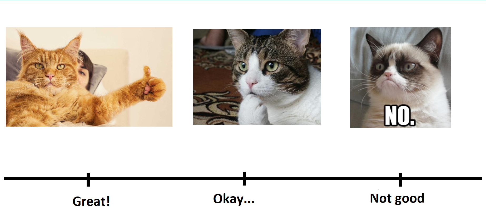

DSCI 100 - Introduction to Data Science
Lecture 1 - Getting started with Jupyter & Python
Photos/Images by #WOCinTech/#WOCinTech Chat (CC-BY)
Teaching Team Introductions
Instructors
- DSCI 100 - 003 (R) Kenny Chiu
- DSCI 100 - 004 (R) Lasantha Premarathna
- DSCI 100 - 008 (R) Sky Sheng
- DSCI 100 - 009 (R) Lasantha Premarathna
- DSCI 100 - 101 (Py) Payman Nickchi
TA Team for this section
- Edward Sobczak
- Moein Heidari
- Chloe Zandberg
Meeting times
- Lectures:
- Mondays 8:30 am : 10:20 am
- Tutorials:
- Wednesdays 8:30 am : 10:20 am
Course coordinator
- Julia Peng (courses@stat.ubc.ca)
If you have administrative questions (e.g. are sick and going to miss a quiz), please read the FAQ and contact the course coordinator
Note!
If you feel unwell: STAY HOME.
- you can do your assignments remotely.
- we can make alternate arrangements for quizzes.
- We will drop the lowest worksheet + tutorial score at the end of class.

Course Guidelines
Visit and abide by the course Code of Conduct on Canvas.
Basically: be good to each other.
- Help other students if they’re struggling
- Respect others while they speak; don’t interrupt
- Come to class prepared
- Value diversity, respect everyone’s ideas
Course Guidelines (Continued)
- Be aware of how much you are contributing to class
- If you tend to speak often, allow others to speak
- If you tend to stay quiet, challenge yourself to share ideas so others can learn from you
- Listen actively, and be mindful of each other’s differences
- Avoid demeaning, devaluing, or “putting down” people
- Trust that people are doing the best they can. Be as patient as possible with the learning processes of others
- Respect your teaching team, and expect professionalism and respect in return
e.g.: Posting a “let me google that for you” link on Piazza in response to another student’s question. Please don’t do this. Remember: students in this class come from a wide variety of backgrounds - be good to each other!
Your turn!
- We encourage you to work collaboratively throughout DSCI 100
- Let’s start by getting to know the person next to you
- Introduce yourself
- Which program are you from?
- Why are you interested in Data Science?
- Anything else you want to mention!
How do you currently feel about this upcoming semester?


Brief Canvas walkthrough
Canvas course page
Read the Syllabus and Frequently Asked Questions pages carefully!
Lecture/Tutorial Structure
- We will post a reading before each class.
- e.g. the first chapter is
reading_01
- The readings often provide example answers for the questions in worksheets and tutorials!
- We will kick off each lecture with a little intro
- the slides should be up before each lecture, e.g.
slides_01
- You will have one graded assignment per lecture / tutorial
- Lecture worksheets start in the first class each week, due Saturday 11:59pm
- Tutorial worksheets start in the second class each week, due Saturday 11:59pm
- This week deadline is exception. Please check the Canvas for details.
- There will usually be an ungraded activity/demo in lectures and tutorials
- No “submit button” - our server takes a snapshot at the due date/time
- We won’t give extensions for weekly assignments.
- We will drop the lowest grade for each worksheet and tutorial at the end of the semester.
Assignments
- Lectures during the first class each week.
- Lecture worksheets (e.g.
worksheet_intro) are due Saturdays at 11:59pm
- Tutorials during the second class each week.
- Tutorial worksheets (e.g.
tutorial_intro) are due Saturdays at 11:59pm
- No “submit button” - our server takes a snapshot at the due date/time
- Please make sure you manually save your work! Do not rely on automatic checkpoints!
- The server should basically be on 24 / 7. I will give notice before we shut it down (barring any emergencies).
- See the course syllabus for two common mistakes to avoid for autograded assignments
- Each worksheet is not worth a lot of points – they are designed to help you learn, not evaluate you.
- Please do collaborate, but do not copy!
- We won’t give extensions for weekly assignments. We will drop the lowest grade for each worksheet and tutorial at the end of the semester.
Main Evaluations
- One midterm covering ~6 weeks of material
- Same time & location of week 7’s tutorial. Invigilated in-person.
- One final covering all the material in the course
- To be scheduled by Classroom Services. Invigilated in-person.
- A group project
Collaborate!
- Talk to each other (in class, on Piazza) as you work through the worksheets and tutorials
- Group project at middle-end of course
- You will be working with the same people every week
- get to know one another; let’s build a community where we help each other learn both during and outside of class!
What is data science exactly?
Data science is the use of reproducible and auditable processes to obtain value (i.e., insight) from data.
High-level goals of this course:
Learn how to use reproducible tools (Jupyter + Python) to do data analysis
Learn how to identify and solve 4 common problems in data science
Problems we will focus on:
Predict a class/category for a new observation/measurement (e.g., cat or dog image)
Predicting a value for a new observation/measurement (e.g., 10 km race time for 20 year old females with a BMI of 25)
Finding previously unknown/unlabelled subgroups in your data (e.g., products commonly bought together on Amazon)
Estimating an average or a proportion from a representative sample (group of people or units) and using that estimate to generalize to the broader population (e.g., the proportion of undergraduate students that own an iphone)
First week learning goals:
Edit and execute code and markdown in Jupyter notebooks
Do the basics of data manipulation and visualization in Python
Use the help and documentation tools in Python
We’ve got a lot to do - let’s get started!

I’ll begin with a quick Jupyter notebook demo using your first assignment, Worksheet 1.
- What is a notebook?
- Cells with either code or text
- Run with play button
- Saving notebook
- Restart kernel and run all before submitting
- Shut down the server when you are done
Help
- If you run into a technical issue you can’t solve, first try to restart the kernel
- Click the menu in the top left:
Kernel -> Restart Kernel and Run All
- If the problem persists, restart your Jupyter server instance.
- Save the notebook (avoid losing work). Download it to be extra safe.
- Click
File -> Hub Control Panel
- Click “Stop my server”
- Click the Log Out button in the top right corner
- Close all JupyterLab tabs
- Refresh Canvas page, click worksheet link again
Note
You will all be using a shiny brand new server that we host in the Statistics department.
This course is “bleeding edge” – we do a lot of things that no other course does behind the scenes.
Be patient if something doesn’t work. We will do our best to debug things as quickly as possible
We will always be fair about deadlines/grading/etc when our hardware acts up.
Warning
- Do not ever delete or change the name of any file in your Jupyter home folder!
- We rely on very specific filenames to retrieve your submitted work automatically
- If you rename or move things, our system will not find your assignment submission
- If you accidentally change the filename or move/delete a file, tell me or a TA as soon as possible so we can help you